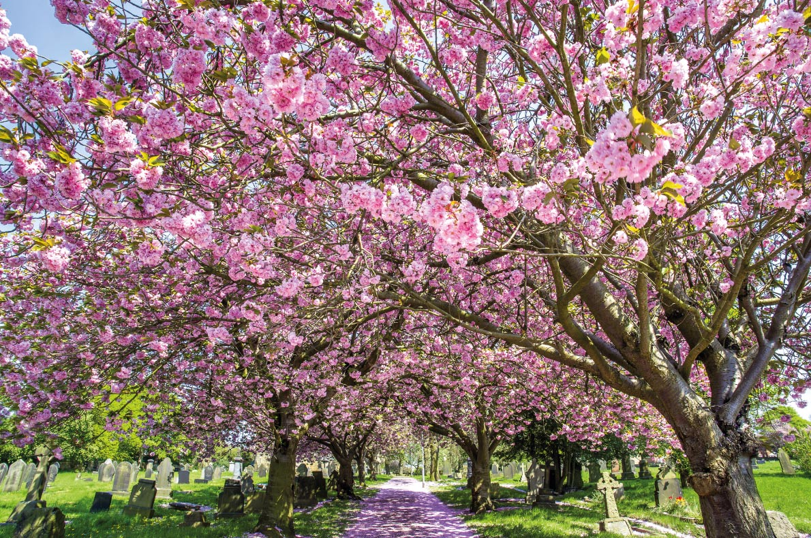
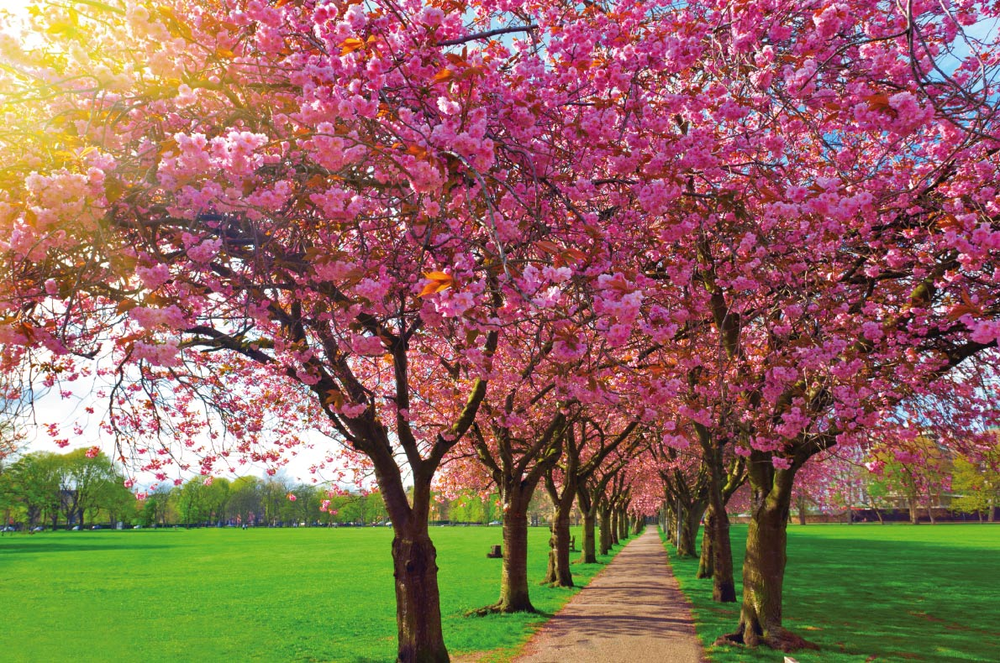
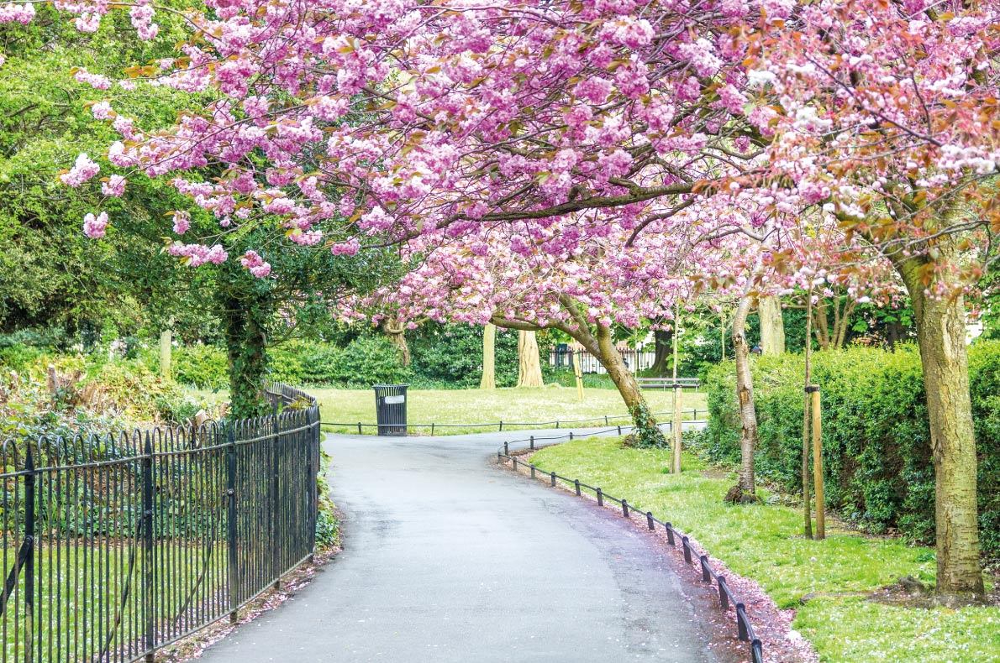
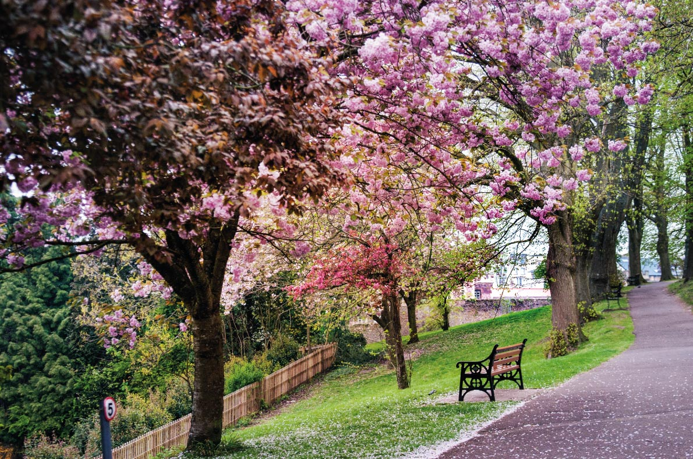

It is certainly the most beautiful and the most famous Japanese cherry trees
alley in Europe. Dozens of cherry trees in bloom are growing on the "Heertrasse"
avenue in Bonn; they offer a wonderful setting for a romantic stroll. If you are
a music lover, the house of Beethoven is worth a visit (it is very near).
Come visit the famous cherry blossom alley from late March to early May in Bonn.
Book your flight tickets and hotel at the best price guaranteed.

2.Archway Normanton,West Yorkshire
What a good idea it was to plant dozens of cherry trees in the old Normanton
churchyard. Those beautiful blooming trees bring visitors comfort and peace.

3. Edinburgh,Scotland
"The Meadows" is a public park where you can play cricket, tennis or just
walk on a beautiful Japanese cherry blossom alley between mid-March and early May.
Book your stay in Edinburgh and select your best activities and a hotel, B&B,
appartment, at the best price in Edinburgh.

4.Saint Stephen's Green park - Dublin,Ireland
Located in the heart of Dublin city centre, this beautiful park is a haven of peace
that will soon commemorate 500 years. Come to rest breathe the air, have a picnic
or simply walk around and admire the flowering of these magnificent Japanese cherry
trees from mid-March to the beginning of May.
Book your flight tickets and hotel at the best price guaranteed as well as your best
activities in Dublin for an unforgettable stay in the capital of Ireland.

5.Bristol,United Kingdom
The English people love gardens; there are beautiful gardens and beautiful blooming trees
everywhere in England. Head for Bristol Park, enjoy the beautiful show and kiss your lover
under a rain of petals of pink flowers. Book your flight tickets and hotel at the best price
guaranteed in this romantic town.